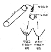
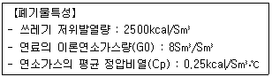
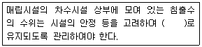
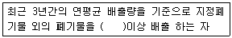
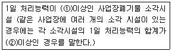

폐기물처리기사 (2008-05-11 기출문제)
1과목: 폐기물 개론
1. 인구 200,000인 어느 도시의 1인 1일 쓰레기 배출량이 1.8㎏이다. 쓰레기 밀도가 0.5ton/m3이라면 적재량 15m3의 트럭이 처리장으로 한달 동안 운반해야 할 횟수는? (단, 한 달은 30일, 트럭은 1대 기준이다.)
- 914회
- 1020회
- 1220회
- 1440회
(정답률: 알수없음)

2. 폐기물 선별에 대한 설명 중 옳지 않은 것은?
- 와전류식 선별은 전자석 유도에 관한 페러데이법칙을 기초로 한다.
- 풍력선별기에 있어 전형적인 폐기물/공기비는 2~7이다.
- 펄스풍력선별기는 유속의 변화를 이용하는 장치이다.
- 정전기적 선별을 이용하면 플라스틱에서 종이를 선별한 수 있다.
(정답률: 알수없음)
3. 완전히 건조 시킨 폐기물 10g을 취해 화분량을 조사하니 2g이었다. 이 폐기물의 원래 함수율이 30% 였다면, 이 폐기물의 습량기준 회분중량비(%)는?
- 14
- 16
- 18
- 20
(정답률: 알수없음)
4. 적환장(transfer station)을 설치하는 일반적인 경우와 가장 거리가 먼 것은?
- 불법투기와 다량의 어질러진 쓰레기들이 발생할 때
- 고밀도 거주지역이 존재할 때
- 상업지역에서 폐기물수집에 소형용기를 많이 사용할 때
- 슬러지 수송이나 공기수송 방식을 사용할 때
(정답률: 알수없음)
5. 쓰레기 발생량에 영향을 미치는 요인에 관한 설명으로 알맞지 않은 것은?
- 수거빈도가 잦거나 쓰레기통의 크기가 크면 쓰레기 발생량이 증가한다.
- 재활용품의 회수 및 재 이용률이 높을수록 쓰레기 발생량이 감소한다.
- 쓰레기 관련 법규는 쓰레기 발생량에 중요한 영향을 미친다.
- 생활수준이 높은 주민들의 쓰레기 발생량은 그렇지 않은 주민들보다 적고 종류 또한 단순하다.
(정답률: 알수없음)
6. 폐기물의 성상분석 단계로 가장 알맞은 것은?
- 건조→물리적 조성분석→ 분류(가연,불연성)→절단 및 분쇄→화학적 조성분석
- 건조→분류(가연, 불연성)→물리적 조성분석→발열량 측정→화학적 조성분석
- 밀도측정→물리적 조성분석→건조→분류(가연, 불연성)→절단 및 분쇄→화학적 조성분석
- 밀도측정→전처리→물리적 조성분석→분류(가연, 불연성)→건조→화학적 조성분석
(정답률: 알수없음)
7. X90=3.8㎝로 도시폐기물을 파쇄하고자 할 때(즉, 90% 이상을 3.8㎝보다 작게 파쇄하고자 할 때) Rosin-Rammler 모델에 의한 특성입자크기 X0는?
- 약 1.1㎝
- 약 1.3㎝
- 약 1.7㎝
- 약 1.9㎝
(정답률: 알수없음)
8. 폐기물 파쇄에 대한 설명 중 틀린 것은?
- 터브 그라인더(tub grinder)는 발생원에서 현장처리를 할 수 있는 일종의 이동식 해머밀 파쇄기이다.
- 전단파쇄기는 해머밀 파쇄기보다 저속으로 운전된다.
- 전형적인 터브 그라인더(tub grinder)는 투입구 직경이 크다는 특징을 가진다.
- 해머밀 파쇄기는 반대방향으로 회전하는 두개의 칼날작용으로 균일한 파쇄가 가능하다.
(정답률: 알수없음)
9. 폐기물의 입도를 분석한 결과 입도누적 곡선상 최소 입경으로부터 10%가 입경 2㎜, 20%는 3㎜, 40%는 5㎜, 60%는 8㎜, 80%는 10㎜, 90%는 20㎜ 였을 때 균등계수는?
- 1.7
- 2.5
- 4.0
- 5.0
(정답률: 알수없음)
10. 폐기물 원소분석에 있어 별도의 장치나 기기(연소관, 환원관 및 흡수관의 충전물 교환 등)를 필요로 하지 않고 자동원소 분석기를 이용하여 동시에 분석할 수 있는 항목만 열거한 것은?
- C,H,O
- C,H,N
- C,H,S
- C,H,Cl
(정답률: 알수없음)
11. 다음 중 유해폐기물 불법매립과 관련이 깊은 상황은?
- 보팔 사건
- 트레일 스멜터 사건
- 러브운하 사건
- 세베소 사건
(정답률: 알수없음)
12. 밀도가 500㎏/m3인 쓰레기 5ton을 압축시켰더니 처음 부피 보다 60% 줄었다. 이 경우 Compact ratio는?
- 1.5
- 1.7
- 2.5
- 2.7
(정답률: 알수없음)
13. 다음 그림이 나타내는 선별방법은?

- Stoners
- Jigs
- Secators
- Tables
(정답률: 알수없음)
14. 생활폐기물 발생량의 조사방법 중 직접계근법에 관한 설명과 가장 거리가 먼 것은?
- 입구에서 쓰레기가 적재되어 있는 차량과 출구에서 쓰레기를 적하한 공차량을 계근 하여 쓰레기량을 산출한다.
- 비교적 정확한 쓰레기 발생량을 파악할 수 있다.
- 적재차량 계수분석에 비해 작업량이 많고 번거롭다.
- 주로 산업폐기물 발생량을 추산하는데 이용되며 조사범위가 정확하여야 한다.
(정답률: 알수없음)
15. 인구 10,000명의 도시에서 1일 1인당 1.2㎏의 쓰레기를 배출하고 있다. 이때 쓰레기의 평균 겉보기 밀도는 500㎏/m3이다. 일주일간 발생되는 쓰레기의 양은? (단, 일요일은 1.5㎏/인ㆍ일의 율로 계산)
- 174m3
- 194m3
- 224m3
- 244m3
(정답률: 알수없음)
16. 함수율 95%의 슬러지를 함수율 50%인 슬러지로 만들려면 슬러지 1ton당 얼마의 수분을 증발시켜야 하는가? (단, 비중은 1.0 기준)
- 800㎏
- 850㎏
- 900㎏
- 950㎏
(정답률: 알수없음)
17. 투입량이 1ton/h 이고, 회수량이 700㎏/h(그 중 회수대상물질은 550㎏/h)이며 제거량은 300㎏/h(그중 회수대상물질은 70㎏/h)일 때 선별효율은?
- 약45%
- 약49%
- 약54%
- 약59%
(정답률: 알수없음)
18. 폐기물의 수거노선 설정 시 고려해야 할 사항으로 틀린 것은?
- 지형이 언덕인 경우는 내려가면서 수거한다
- 발생량은 적으나 수거빈도가 동일하기를 원하는 곳은 같은 날 왕복으로 처리한다.
- 가능한 한 시계방향으로 수거노선을 정한다
- 발생량이 가장 적은 곳부터 시작하여 많은 곳으로 수거노선을 정한다.
(정답률: 알수없음)
19. 5백만 ton/yr의 쓰레기를 5000명의 인부가 수거하고 있다. 수거능력은 MHT로 얼마인가?(단, 수거인부 1일 작업시간은 8시간, 연중 휴무일수는 65일이다.)
- 2.4
- 3.6
- 4.8
- 5.6
(정답률: 알수없음)
20. 최소 크기가 10㎝인 폐기물을 2㎝로 파쇄하고자 할 때 kick's 법칙에 의한 소요동력은 동일 폐기물을 4㎝로 파쇄할 때 소요되는 동력의 몇배인가? (단, n=1로 가정한다.)
- 약1.8배
- 약2.3배
- 약2.6배
- 약3.2배
(정답률: 알수없음)
2과목: 폐기물 처리 기술
21. 포도당(C6H12O6)으로 구성된 유기물 1㎏이 혐기성 미생물에 의해 완전히 분해되어 생성되는 메탄의 용적(Sm3)은?
- 0.224
- 0.373
- 0.462
- 0.561
(정답률: 알수없음)
22. 토양오염 처리방법의 하나인 토양증기추출법(Soil Vapor extraction)과 관련된 인자와 그 기준으로 틀린 것은?
- 대상오염물질의 헨리상수(무차원):0.01이상
- 대상오염물질:상온에서 휘발성갖는 유기물질
- 추출정의 위치: 오염지역 외곽
- 오염부지 공기투과계수:1×10-4㎝/sec
(정답률: 알수없음)
23. 폐기물을 화학적으로 처리하는 방법 중 용매추출법에 대한 특징이 아닌 것은?
- 높은 분배계수와 낮은 끓는점을 가지는 폐기물에 이용 가능성이 높다.
- 사용되는 용매는 극성이어야 한다.
- 증류 등에 의한 방법으로 용매 회수가 가능해야 한다.
- 물에 대한 용해도가 낮고 물과 밀도가 다른 폐기물에 이용 가능성이 높다.
(정답률: 알수없음)
24. 매립지에서 유기물의 완전 분해식을 C68H111O50N + aH2O ⇒ bCH4 + 33CO2 + NH3로 가정할 때 유기물 100㎏을 완전 분해시 소모되는 물의 양은?
- 41.5㎏ H2O
- 32.5㎏ H2O
- 23.5㎏ H2O
- 16.5㎏ H2O
(정답률: 알수없음)
25. 밀도가 2.0g/cm3인 폐기물 20㎏에다 고형화재료를 10㎏첨가하여 고형화시킨 결과 밀도가 2.8g/cm3으로 증가하였다면 부피변화율(VCF)은?
- 0.94
- 1.07
- 1.17
- 1.24
(정답률: 알수없음)
26. 어느 도시에 사용할 매립지의 총용량은 6,132,000m3이며 그 도시의 쓰레기 배출량은 2㎏/인ㆍ일이다. 매립지에서 압축에 의한 쓰레기 부피 감소율이 30%일 경우 매립지를 사용할 수 있는 년 수는? (단, 수거대상인구 800,000명, 발생 쓰레기밀도 500㎏/m3으로 함)
- 7.5
- 9.5
- 11.5
- 13.5
(정답률: 알수없음)
27. 매립지 내의 물의 이동을 나타내는 Darcy의 법칙을 기준으로 침출수의 유출을 방지하기 위한 옳은 방법은?
- 투수계수는 감소, 수두차는 증가시킨다.
- 투수계수는 증가. 수두차는 감소시킨다.
- 투수계수 및 수두차는 증가시킨다.
- 투수계수 및 수두차를 감소시킨다.
(정답률: 알수없음)
28. 점토가 매립지의 차수막으로 적합하기 위한 기준으로 틀린 것은?
- 점토 및 미사토 함유량 : 20% 이상
- 소성지수 : 10%이상 30%미만
- 액성한계 : 30% 이상
- 직경이 2.5㎝이상인 입자함유량 : 5% 미만
(정답률: 알수없음)
29. 결정도(Crystallinity)와 합성 차수막의 성질에 대해 잘못 설명된 것은?
- 결정도가 증가할수록 단단해진다.
- 결정도가 증가할수록 충격에 약해진다.
- 결정도가 증가할수록 화학물질에 대한 저항성이 증가한다.
- 결정도가 증가할수록 열에 대한 저항성이 감소한다.
(정답률: 알수없음)
30. 총고형물합이 36,500㎎/ℓ, 휘발성 고형물이 총고형물 중 64.5%인 폐기물 60㎘/day를 혐기성 소화조에서 소화시켰을 때 1일 가스 발생량은? (단, 폐기물 비중 1.0, 가스발생량은 0.35m3/㎏ (VS)이다.)
- 약 435m3/day
- 약 455m3/day
- 약 475m3/day
- 약 495m3/day
(정답률: 알수없음)
31. 폐기물 고형화 방법 중 배기가스를 탈황시킬 때 발생되는 슬러지(FGD 슬러지)의 처리에 많이 이용되는 것은?
- 자가 시멘트법
- 시멘트 기초법
- 석회 기초법
- 피막 형성법
(정답률: 알수없음)
32. 시멘트를 이용한 유해폐기물 고화처리시 압축강도, 투수계수, 물/시멘트비(water/cement ratio)사이의 관계를 바르게 설명한 것은?
- 물/시멘트비는 투수계수에 영향을 주지 않는다.
- 압축강도와 투수계수 사이는 정비례한다.
- 물/시멘트비가 낮으면 투수계수는 증가한다
- 물/시멘트비가 높으면 압축강도는 낮아진다
(정답률: 알수없음)
33. 함수울이 97%, 총 고형물중의 유기물이 80%인 고형물을 소화조에 200m3/day의 율로 투입하여 유기물의 2/3가 가스화 또는 액화 후 함수율 95%인 소화 슬러지가 얻어졌다고 한다. 소화슬러지 량은? (단, 슬러지의 비중 1.0)
- 48m3/day
- 56m3/day
- 75m3/day
- 84m3/day
(정답률: 알수없음)
34. 유해성물질(지정폐기물)을 고형화하는 열중합체법에 대한 설명이다. 옳지 않은 것은?
- 광범위하고 복잡한 장치, 숙련된 기술이 필요하다.
- 용출 손실률은 시멘트 기초법에 비해 상당히 낮다.
- 수분을 포함한 상태에서 고형화되므로 전체부피가 증가한다.
- 높은 온도에서 분해되는 물질은 사용할 수 없다.
(정답률: 알수없음)
35. 일반적으로 하수 슬러지를 혐기성 소화처리 하는 경우, 소화조 내 유기산(Volatile acid) 농도로 가장 적절한 것은?
- 200~450㎎/ℓ
- 3,000~3,500㎎/ℓ
- 5,500~6,000㎎/ℓ
- 13,000~15,500㎎/ℓ
(정답률: 알수없음)
36. 함수율 95%인 분뇨의 유기탄소량은 30%/TS이고 총질소량은 15%/TS이다. 이 분뇨와 혼합할 볏짚의 함수율은 25%이며 유기 탄소량은 85%/TS, 총질소량은 3%/TS이다. 분뇨:볏짚을 무게비 2:3으로 혼합했을 경우의 C/N비는?
- 약 13
- 약 18
- 약 24
- 약 29
(정답률: 알수없음)
37. 매립지의 연직 차수막에 관한 설명으로 맞는 것은?
- 지중에 암반이나 점성토의 불투수층이 수직으로 깊이 분포하는 경우에 설치한다.
- 지하수 집배수시설이 필요하다.
- 지하에 매설되므로 차수성의 확인이 어렵다
- 차수막의 단위면적당 공사비는 적게 드나 총공사비는 많이 든다.
(정답률: 알수없음)
38. 침출수가 점토층을 통과하는 데 소요되는 시간을 계산하는 식으로 알맞은 것은?(단, t: 통과시간(year), d: 점토층두께(m), h: 침출수수두(m), K: 투수계수(m/year), n: 유효공극률)
- t=nd2/K(d+h)
- t=dn/K(d+h)
- t=nd2/K(2d+h)
- t=dn/K(2h+d)
(정답률: 알수없음)
39. 합성차수막인 CSPE에 대한 설명으로 틀린 것은?
- 미생물에 약하다.
- 기름, 탄화수소 및 용매류에 약하다.
- 접합이 용이하다.
- 산과 알칼리에 특히 약하다.
(정답률: 알수없음)
40. 함수율이 90%인 슬러지의 겉보기비중이 1.02였다. 이 슬러지를 진공여과기로 탈수하여 함수율이 60%인 슬러지를 얻었다면 이 슬러지가 갖는 겉보기 비중은? (단, 물의 비중은 1.0)
- 1.065
- 1.085
- 1.125
- 1.145
(정답률: 알수없음)
3과목: 폐기물 소각 및 열회수
41. 함수율 70%인 슬러지 케이크 10ton을 소각할 때 소각재 발생량(㎏)은? (단, 건조케이크 건조중량당 무기성분 20%, 유기성분 중 연소율 90%, 소각에 의한 무기물 손실은 없다.)
- 560
- 620
- 720
- 840
(정답률: 알수없음)
42. 황선분이 1%인 폐기물을 10t/hr 소각하는 소각로에서 배기가스 중의 SO2를 CaCO3로 완전히 탈황하는 경우 이론상 하루에 필요한 CaCO3의 양은? (단. 폐기물 중의 S는 모두 SO2로 전환되며, 소각로의 1일 가동시간은 8시간, Ca 원자량:40)
- 1.2t/day
- 2.5t/day
- 3.2t/day
- 4.0t/day
(정답률: 알수없음)
43. 이론적으로 순수한 탄소 3㎏을 완전 연소시키는데 필요한 산소의 양은?
- 6㎏
- 8㎏
- 10㎏
- 12㎏
(정답률: 알수없음)
44. 공기를 사용하여 C3H8을 완전 연소시킬 때 건조가스 중의 (CO2)max(%)는?
- 약 14%
- 약 24%
- 약 34%
- 약 44$
(정답률: 알수없음)
45. 일반적으로 직경이 10~20㎜이고 길이가 30~50㎜인 형태와 크기를 가지며 보관이나 운반의 효율을 높이는 동시에 단위 무게당 열량을 향상시킨 RDF의 종류는?
- Powder RDF
- Pellet RDF
- Fluff RDF
- Bubble RDF
(정답률: 알수없음)
46. 폐기물 소각로의 폐열회수 및 이용설비에 대한 설명으로 틀린 것은?
- 폐기물을 소각할 경우 이들의 발열량에 해당하는 양의 열량이 발생하므로 배기가스의 온도가 올라가게 되어 이를 냉각시켜 배출하여야 한다.
- 일반적으로 배기가스의 온도를 250~300℃로 정하고 있다.
- 상한온도는 배출가스에 의한 저온부식이 발생하지 않는 온도이다.
- 냉각설비 방식으로는 폐열보일러식, 물분사식, 공기혼입식, 간접공냉식이 있다.
(정답률: 알수없음)
47. 폐지 500㎏을 소각하고자 한다. 이론공기량(Sm3)은? (단, 폐지의 성분은 모두 셀룰로오스(C6H10O5)로 가정함)
- 약 1000
- 약 2000
- 약 3000
- 약 4000
(정답률: 알수없음)
48. 밀도가 600㎏/m3인 도시쓰레기 100ton을 소각시킨 결과 밀도가 1200㎏/m3인 재 10ton이 남았다. 이 경우 부피 감소율과 무게감소율 중 큰 것은?
- 무게 감소율
- 부피 감소율
- 부피 감소율과 무게 감소율이 동일하다.
- 주어진 조건만으로는 알 수 없다.
(정답률: 알수없음)
49. 【반응열의 양은 반응이 일어나는 과정에 무관하고, 반응 전후에 있어서의 물질 및 그 상태에 의하여 결정된다.】위의 내용으로 알맞은 법칙은?
- Graham의 법칙
- Dalton의 법칙
- Hess의 법칙
- Le Chateller의 법칙
(정답률: 알수없음)
50. 다음과 같은 특성을 갖는 액상 폐기물을 완전 연소시켰을 때 이론적인 연소온도는 몇℃인가?

- 1250℃
- 1350℃
- 1450℃
- 1550℃
(정답률: 알수없음)
51. 다음은 로터리 킬른식(rotary kiln)소각로의 특징에 대한 설명이다. 이 중 적합하지 않는 것은?
- 대체로 예열, 혼합, 파쇄 등 전 처리 후 주입한다.
- 넓은 범위의 액상 및 고상 폐기물을 소각할 수 있다.
- 용융상태의 물질에 의하여 방해받지 않는다
- 습식가스 세정시스템과 함께 사용할 수있다
(정답률: 알수없음)
52. 백필터를 이용하여 가스유량이 100m3/min인 함진 가스를 1.5㎝/sec의 여과속도로 처리하고자 한다. 소요되는 여과포의 유효면적(m3)은?
- 98
- 111
- 121
- 135
(정답률: 알수없음)
53. 쓰레기 소각로를 설계하기 위한 쓰레기 발열량 기준이 500kcal/m3ㆍh인 전연속식 소각로의 용적은?
- 약 21m3
- 약 37m3
- 약 45m3
- 약 52m3
(정답률: 알수없음)
54. 유동층 소각로의 장점이 아닌 것은?
- 연소효율이 높아 미연소분의 배출이 적고 2차 연소실 활용이 가능하다.
- 유동매체의 열용량이 커서 액상, 기상, 고형폐기물의 전소 및 혼소가 가능하다.
- 유동매체의 축열량이 높은 관계로 단기간 정지 후 가동시 보조연료 사용 없이 정상가동이 가능하다.
- 가스의 온도와 과잉공기량이 낮아서 질소산화물도 적게 배출된다.
(정답률: 알수없음)
55. 열교환기에 관한 설명으로 옳지 않은 것은?
- 과열기 : 보일러에서 발생하는 포화증기에 다량의 수분이 함유되어 있어 이것에 열을 과하게 가열하여 수분을 제거하고 과열도가 높은 증기를 얻기 위해 설치한다.
- 재열기 : 과열기와 같은 구조로 되어 있으며 설치위치는 대개 과열기의 앞쪽에 배치한다.
- 절탄기 : 급수예열에 의해 보일러수와의 온도차가 감소하므로 보일러 드럼에 발생하는 열응력이 경감된다.
- 이코노마이저(Economizer) : 굴뚝에 설치되며 보일러 전열면을 통하여 연소가스의 여열로 보일러 급수를 예열하여 보일러의 효율을 높이는 장치이다.
(정답률: 알수없음)
56. 어떤 폐기물의 원소조성이 다음과 같고, 실제공기량이 6Sm3일 때 공기비는? (단, 가연분 : 60%(C=45%, H=10%, O=40%, S=5%), 수분:30%, 회분 : 10%)
- 약 1.2
- 약 1.3
- 약 1.5
- 약 1.8
(정답률: 알수없음)
57. 액체 주입형 연소기(Liquid Injection Incinerator)에 대한 설명으로 틀린 것은?
- 고형분의 농도 높으면 버너 막히기 쉽다.
- 광범위한 종류의 액상폐기물을 연소할 수 있다.
- 소각재의 처리설비가 필요하다.
- 구동장치가 없어 고장이 적다.
(정답률: 알수없음)
58. 탄소, 수소의 중량조성이 각각 86%, 14%인 액체연료를 매시 5㎏ 연소하는 경우 배기가스의 분석치는 CO2 10.5%, O2 5.5%, N2 84%였다. 이 경우 매시 실제 필요한 공기량은?
- 약 45Sm3/hr
- 약 55Sm3/hr
- 약 65Sm3/hr
- 약 75Sm3/hr
(정답률: 알수없음)
59. 메탄올(CH3OH) 3㎏을 연소하는데 필요한 이론 공기량(A0)은?
- 약 9Sm3
- 약 11Sm3
- 약 15Sm3
- 약 19Sm3
(정답률: 알수없음)
60. 소각대상물인 염사소성 플라스틱의 저위발열량은 5,400kcal/㎏이며, 이 플라스틱을 소각시 발생 되는 연소재 중의 미 연손실을 저위발열량의 10%이고 불완전연소에 의한 손실은 600kcal/㎏일 때 소각 대상믈의 연소효율은?
- 70%
- 74%
- 79%
- 84%
(정답률: 알수없음)
4과목: 폐기물 공정시험기준(방법)
61. 대상폐기물의 양이 25톤인 경우 시료의 최소수는?
- 10
- 12
- 14
- 16
(정답률: 알수없음)
62. 총칙에서 규정하고 있는 온도에 관한 설명 중 틀린 것은?
- 온수는 60~70℃, 열수는 약 100℃, 냉수는 15℃ 이하로 한다.
- 제반시험 조작은 따로 규정이 없는 한 상온에서 실시하고 조작 직후 그 결과를 관찰하는 것으로 한다.
- 표준온도는 0℃, 상온은 15~25℃, 실온은 1~35℃로 하며 찬 곳은 따로 규정이 없는 한 0~15℃의 곳을 뜻한다.
- '수욕상 또는 물중탕에서 가열한다'라 함은 따로 규정이 없는 한 온수 범위에서 가열함을 말한다.
(정답률: 알수없음)
63. 원자흡광광도계의 각 장치별 기능을 설명한 내용 중 틀린 것은?
- 분광기 - 광원램프에서 방사되는 휘선 스펙트럼 가운데서 필요한 분석선만을 골라내기 위한 것이다.
- 측광부 - 원자화된 시료에 의하여 흡수된 빛의 흡수 강도를 측정하는 것으로 검출기, 증폭기, 지시계기로 구성된다.
- 시료원자화부 - 시료를 원자증기화하기 위한 시료 원자화 장치와 원자증기 중에 빛을 투과시키기 위한 광학계로 되어 있다.
- 광원부의 램프접등장치 - 광원램프의 점등을 위한 교류점등방식은 광원의 빛 변조로 단속기(chopper)가 필요하다.
(정답률: 알수없음)
64. 【분쇄한 대시료를 단단하고 깨끗한 평면 위에 원추형으로 쌓는다. - 원추를 장소를 바꾸어 다시 쌓는다. - 원추에서 일정량을 취하여 장방형으로 도포하고 계속해서 일정량을 취하여 그 위에 입체로 쌓는다. - 그 육면체의 측면을 교대로 돌면서 균등량씩을 취하여 두개의 원추를 쌓는다. - 이중 하나는 버린다.】위와 같은 방식으로 계속 폐기물 시료의 크기를 줄이는 방법은?
- 구획법
- 교호삽법
- 원추 2분법
- 원추 4분법
(정답률: 알수없음)
65. 유기할로겐 화합물, 니트로화합물 및 유기금속화합물을 선택적으로 검출할 수 있는 가스크로마토그래피의 검출기는?
- TCD
- ECD
- FPD
- FID
(정답률: 알수없음)
66. 폐기물 용출시험방법 중 용출조작으로 옳은 것은?
- 진탕시간을 6시간 연속으로 한다.
- 진단기 진탕횟수는 매분만 약300회로 한다.
- 진탕기의 진폭을 5~6㎝로 한다.
- 여과가 어려운 경우에는 10분 이상 원심분리 한 후 상등 액을 검액으로 한다.
(정답률: 알수없음)
67. 노말헥산 추출물질 시험방법에서 사용되는 기구 및 기기가 아닌 것은?
- 80℃온도조절 가능한 전기열판 또는 전기맨틀
- 증발용기(알루미늄박으로 만든 접시 EH는 비커, 증류플라스크로써 50~250㎖인 것)
- 구데르나다니쉬 농축기(500~100㎖인 것)
- ㅏ 자형 연결관 및 리히비히 냉각관(증류플라스크를 사용할 경우)
(정답률: 알수없음)
68. 원자흡광광도법을 이용하여 비소를 분석하고자 한다. 이에 대한 설명으로 틀린 것은?
- 발생된 비화수소를 수소-공기 불꽃에서 원자화시켜 흡광도를 측정한다.
- 정량범위는 0.0⑤~0.⑤㎖/ℓ이고, 유효측정농도는 0.0⑤㎎/ℓ이상이다.
- 염화제일주석으로 시료 중의 비소를 3가 비소로 환원한다.
- 아연분말(비소함량이 0.0⑤ppm이하 것을 사용)을 넣어 비화수소를 발생시킨다.
(정답률: 알수없음)
69. 원자흡광광도법으로 크롬을 측정할 때 공기-아세틸렌 불꽃에서 철, 니켈 등 공존 물질에 의한 방해 영향을 방지하기 위하여 첨가하는 시약은?
- 황산나트륨
- 과망간산칼륨
- 아질산칼륨
- 이산화망간
(정답률: 알수없음)
70. 원자흡광광도법(환원기화법)으로 수은을 측정코자 한다. 시료의 전 처리 과정 중 과잉의 과망간산칼륨을 분해하기 위해 사용하는 용액은?
- 10W/V% 염화제일주석
- (1+4) 암모니아수
- 10W/V% 염산히드록실 아민
- 10W/V% 과황산칼륨
(정답률: 알수없음)
71. 【'정량범위'라 함은 시험방법에 따라 시험 할 경우 표준편차율 ( )에서 측정할 수 있는 정량하한과 정량상한의 범위를 말한다.】( ) 안에 알맞은 내용은?
- 1.0% 이하
- 3% 이하
- 5% 이하
- 10% 이하
(정답률: 알수없음)
72. 원자흡광광도법에 사용되는 용어설명으로 틀린 것은?
- 역화 : 불꽃의 연소속도가 크고 혼합기체의 분출속도가 작을 때 연소현상이 내부로 옮겨지는 것
- 근접선 : 목적하는 스펙트럼선에 가까운 파장을 갖는 다른 스펙트럼선
- 소연료 불꽃 : 가연성가스/조연성가스의 값을 작게 한 불꽃
- 선프로파일 : 원자가 방사하는 스펙트럼선의 파장을 나타내는 파일
(정답률: 알수없음)
73. 다음 시약 제조 방법 중 틀린 것은?
- 1N-NaOH 용액은 NaOH 42g을 물 950㎖에 넣어 녹이고 새로 만든 수산화바륨용액 (포화)을 침전이 생기지 않을 때까지 한방울 씩 떨어뜨려 잘 섞고 마개를 하여 24시간 방치한 다음 여과하여 사용한다.
- 1N-HCl 용액은 염산(35%이상) 120㎖를 물에 넣어 1,000㎖로 한다.
- 20W/V%-KI(비소시험용) 용액은 KI 20g을 물에 녹여 100㎖로 하여 사용할 때 조제한다.
- 2N-H2SO4 용액은 황산(95.0% 이상) 60㎖를 물 1ℓ 중에 섞으면서 천천히 넣어 식힌다.
(정답률: 알수없음)
74. 시안분석시 시료 중에 함유된 잔류염소를 제거하기 위한 적절한 방법은? (단, 흡광광도법 기준)
- 잔류염소 10㎎당 L-아스코르빈산(10W/V%) 0.2㎖를 넣어 제거한다.
- 잔류염소 10㎎당 초산아연(10W/V%) 0.6㎖를 넣어 제거한다.
- 잔류염소 20㎎당 수산나트륨(10W/V%) 0.8㎖를 넣어 제거한다.
- 잔류염소 20㎎당 아비산나트륨(10W/V%) 0.7㎖를 넣어 제거한다.
(정답률: 알수없음)
75. 강도 I0의 단색광이 검색액을 통과할 때 그 빛의 30%가 흡수 되었다면 흡광도는?
- 0.155
- 0.181
- 0.216
- 0.283
(정답률: 알수없음)
76. 다음의 시험법과 발색을 나타낸 것 중 시안의 시험법에 해당하는 것은?
- 디티존법 - 적색
- 피리딘피라졸론법 - 청색
- 디페닐카르바지드법 - 적자색
- 디에틸디티오카르바민산은법 - 적자색
(정답률: 알수없음)
77. 유도결합플라즈마발광광도법 대한 설명으로 옳지 않은 것은?
- 시료주입부는 시료주입방법에 따라 연속 주사형 단원소방식과 동시주사형 다원소 방식으로 구분된다.
- ICP의 토치(Torch)는 3중으로 된 석영관이 이용된다.
- 플라즈마는 그 자체가 광원으로 이용되기 때문에 매우 넓은 농도 범위에서 시료를 측정할 수 있다.
- 현재 널리 사용하고 있는 고주파 전원은 수정발전식의 27.13㎒로 1~3㎾의 출력이다.
(정답률: 알수없음)
78. 강열감량 및 유기물함량에 대한 설명으로 옳지 않은 것은?
- 시료 적당량은 시료를 50g 이상 취하는 것을 말한다.
- 백금제, 석영제, 사기제 도가니 또는 접시를 미리 600±25℃에서 30분간 강열하고 황산데시케이터 안에서 방냉한 다음 그 무게를 정확히 단다.
- 용기내의 시료에 25% 질산암모늄용액을 넣어 시료를 적시고 천천히 가열하여 탄화시킨다.
- 유기물함량(%)=[휘발성고형물(%)/고형물(%)]×100(단,휘발성고형물(%)=강열감량(%)-수분(%))
(정답률: 알수없음)
79. 이온전극법 분석시 Na+, K+ 이온을 측정하고자 할 때 사용하는 이온 전극의 종류로 가장 적절한 것은?
- 유리막 전극
- 고체막 전극
- 격막형 전극
- 유화막 전극
(정답률: 알수없음)
80. 중량법에 의한 기름성분 시험에서 pH 조절할 때 사용하는 지시약은?
- Methyl violet
- Methyl orange
- Methyl red
- Phenolphthalein
(정답률: 알수없음)
5과목: 폐기물 관계 법규
81. 매립시설의 침출수를 측정하는 기관으로 틀린 것은?
- 환경관리공단
- 보건환경연구원
- 한국환경자원공사
- 국립환경과학원
(정답률: 알수없음)
82. 폐기물처리시설 중 중간처리시설인 기계적 처리시설에 대한 기준으로 틀린 것은?
- 절단시설(동력 10마력 이상 시설 한정)
- 연료화 시설
- 멸균분쇄시설(동력10마력 이상 시설 한정)
- 압축시설(동력10마력 이상 시설 한정)
(정답률: 알수없음)
83. 폐기물처리담당자 등의 교육에 대한 설명으로 틀린 것은?
- 시ㆍ도지사 또는 지방환경관서의 장은 관할구역의 교육대상자를 선발하여 그 명단을 해당 교육과정 개시 15일 전까지 교육기관의 장에게 알려야 한다.
- 교육기간은 5일 이내로 한다.
- 폐기물 처리 담당자는 3년마다 교육을 받아야 한다.
- 교육기관은 국립환경인력개발원, 환경관리공단 및 환경보전협회이다.
(정답률: 알수없음)
84. 다음은 사후관리기준 및 방법 중 침출수 관리방법에 관한 설명이다. ( )안에 맞는 내용은?

- 0.3m 이하
- 0.6m 이하
- 1.0m 이하
- 2.0m 이하
(정답률: 알수없음)
85. 관리형 매립시설에서 발생되는 침출수의 수소이온농도(pH) 배출허용기준으로 적절한 것은? (단, 청정지역)
- 6.8~7.3
- 6.3~7.8
- 5.8~8.0
- 5.3~8.3
(정답률: 알수없음)
86. 폐기물처리시설 중 멸균분쇄시설의 검사기관으로 적절치 않은 것은?
- 한국환경자원공사
- 한국기계연구원
- 보건환경연구원
- 산업기술시험원
(정답률: 알수없음)
87. 폐기물처리시설별 정기검사 시기가 틀린 것은?(단, 최초 정기검사임)
- 소각시설 : 사용개시일로부터 2년
- 매립시설 : 사용개시일로부터 1년
- 멸균분쇄시설 : 사용개시일로부터 3개월
- 음식물류 폐기물 처리시설 : 사용개시일로 부터 1년
(정답률: 알수없음)
88. 다음은 폐기물 발생 억제 지침 준수의무대상 배출자의 규모기준에 관한 내용이다. ( )안에 맞는 것은?

- 200t
- 500t
- 1000t
- 2000t
(정답률: 알수없음)
89. 폐기물처리시설의 설치기준에서 고온용융시설의 출구온도는 섭씨 몇도 이상이어야 하는가?
- 1,100℃
- 1,200℃
- 1,300℃
- 1,400℃
(정답률: 알수없음)
90. 환경부장관 등이 실시하는'폐기물 통계조사'의 실시 주기는?
- 매 2년
- 매 3년
- 매 5년
- 매 10년
(정답률: 알수없음)
91. 폐기물처리업의 허가를 받을 수 없는 자에 대한 기준으로 틀린 것은?
- 폐기물처리업의 허가가 취소된 자로서 그 허가가 취소된 날부터 2년이 지나지 아니한 자
- 파산선고를 받고 복권되지 아니한 자
- 폐기물관리법을 위반하여 징역 이상의 형의 집행유예를 선고받고 그 집행유예 기간이 지나지 아니한 자
- 폐기물관리법외의 법을 위반하여 징역이상의 형을 선고받고 그 형의 집행이 끝난 지 2년이 지나지 아니한 자
(정답률: 알수없음)
92. 지정폐기물 중 특정시설에서 발생 되는 폐기물에 관한 내용으로 틀린 것은?
- 폐합성 수지(고체상태의 것은 제외)
- 폐합성 고무(고체상태의 것은 제외)
- 폐농약(농약의 제조, 판매업소에서 발새오디는 것으로 한정한다.)
- 폐유기용제(광물유, 동물유 및 식물유는 제외한다.)
(정답률: 알수없음)
93. 폐기물관리종합계획에 포함되어야 할 사항과 가장 거리가 먼 것은?
- 종전의 종합계획에 대한 평가
- 폐기물 관리 여건 및 전망
- 부문별 계획 기조
- 재원 조달 계획
(정답률: 알수없음)
94. 폐기물 처리업의 업종별 영업내용으로 맞는 것을?
- 폐기물 최종처리업 : 폐기물 최종처리시설을 갖추고 폐기물을 매립 등(해역 배출은 제외한다)의 방법으로 최종처리하는 영업
- 폐기물 중간처리업 : 폐기물 중간처리시설을 갖추고 폐기물을 중화, 파쇄 또는 고형화 등의 방법으로 중간처리(생활 폐기물을 재활용하는 경우는 포함한다)하는 영업
- 폐기물 최종처리업 : 폐기물 최종처리시설을 갖추고 폐기물을 소각, 매립 등 (해역 배출을 포함한다)의 방법으로 최종처리하는 영업
- 폐기물 중간처리업 : 폐기물 중간처리시설을 갖추고 폐기물을 중화, 파쇄 또는 고형화 등의 방법으로 중간처리(사업장 폐기물을 재활용하는 경우는 제외한다)하는 영업
(정답률: 알수없음)
95. 폐기물처리시설의 설치승인 신청시 환경부장관이 고시하는 사항을 포함한 시설설치의 환경성조사서를 첨부하여야 하는 시설기준은?
- 면적 3,000m2 이상 또는 매립용적 10,000m3이상인 매립시설 및 1일 처리능력 100톤 이상(지정폐기물인 경우는 10톤 이상)인 소각시설
- 면적 3,000m2 이상 또는 매립용적 10,000m3이상인 매립시설 및 1일 처리능력 200톤 이상(지정폐기물인 경우는 20톤 이상)인 소각시설
- 면적 10,000m2 이상 또는 매립용적 30,000m3 이상인 매립시설 및 1일 처리능력 100톤 이상(지정폐기물인 경우는 10톤 이상)인 소각시설
- 면적 10,000m2 이상 또는 매립용적 30,000m3 이상인 매립시설 및 1일 처리능력 200톤 이상(지정폐기물인 경우는 20톤 이상)인 소각시설
(정답률: 알수없음)
96. 다음 중 폐기물관리법상의 의료폐기물의 종류와 가장 거리가 먼 것은?
- 격리의료폐기물
- 일반의료폐기물
- 유해의료폐기물
- 위해의료폐기물
(정답률: 알수없음)
97. 사업장 폐기물을 폐기물처리업자에게 위탁하여 처리하려는 사업장 폐기물배출자가 환경부장관이 고시하는 폐기물 처리 가격의 최저액 보다 낮은 가격으로 폐기물 처리를 위탁하였을 경우에 과태료 부과 기준은?
- 300만원 이하의 과태료
- 500만원 이하의 과태료
- 1천만원 이하의 과태료
- 2천만원 이하의 과태료
(정답률: 알수없음)
98. 다음은 주변지역 영향 조사대상 폐기물처리시설에 대한 설명이다. ( )안에 맞는 내용은?

- ① 30톤 ② 30톤
- ① 30톤 ② 60톤
- ① 50톤 ② 50톤
- ① 50톤 ② 100톤
(정답률: 알수없음)
99. 폐기물시설설치 승인을 받은 경우, 환경부령으로 정하는 중요사항을 변경하려면 변경승인을 받아야 함에도 변경승인을 받지 아니하고 승인받은 사항을 변경한 자에 대한 벌칙기준은?
- 1천만원 이하의 과태료
- 5백만원 이하의 과태료
- 1년 이하의 징역 또는 5백만원 이하의 벌금
- 2년 이하의 징역 EH는 1천만원 이하의 벌금
(정답률: 알수없음)
100. 폐기물처리시설 중 멸균, 분쇄시설의 경우 기술관리인을 두어야 하는 기준으로 맞는 것은? (단, 폐기물처리업자가 운영하지 않음)
- 1일 처리능력이 5톤 이상인 시설
- 1일 처리능력이 10톤 이상인 시설
- 시간당 처리능력이 100킬로그램 이상인 시설
- 시간당 처리능력이 200킬로그램 이상인 시설
(정답률: 알수없음)
쓰레기 밀도가 0.5ton/m3이므로, 360,000㎏의 쓰레기를 운반하기 위해서는 360,000kg ÷ 500kg/m3 = 720m3의 공간이 필요하다.
적재량 15m3의 트럭이 한 번에 운반할 수 있는 쓰레기 양은 15m3 x 500kg/m3 = 7,500kg이다.
한 달은 30일이므로, 한 달 동안 처리장으로 운반해야 할 쓰레기 양은 360,000kg x 30일 = 10,800,000kg이다.
한 대의 트럭이 한 번에 운반할 수 있는 쓰레기 양은 7,500kg이므로, 한 대의 트럭으로 한 번에 처리할 수 있는 일일 쓰레기 양은 7,500kg ÷ 30일 = 250kg이다.
따라서, 한 달 동안 처리장으로 운반해야 할 쓰레기 양을 한 대의 트럭으로 처리하기 위해서는 10,800,000kg ÷ 7,500kg = 1,440회의 운반이 필요하다.
따라서 정답은 "1440회"이다.